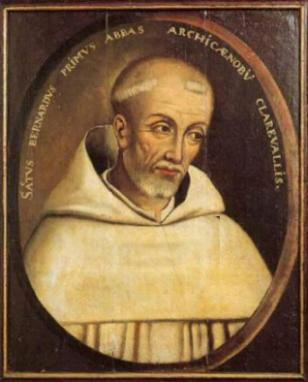
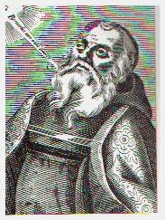
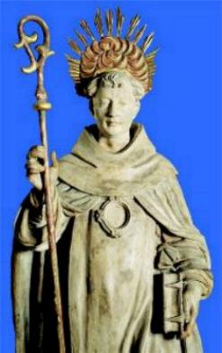
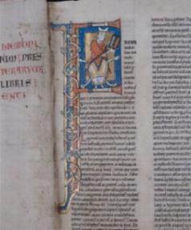
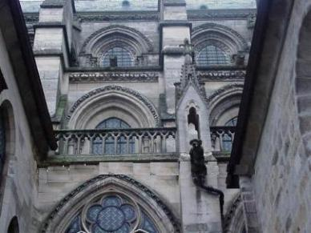

CISMA ANACLETINO - Em 1130,
na noite de 13 de fevereiro, o Papa Honório II exalou seu último suspiro.
CISMA ANACLETINO - Em 1130,
na noite de 13 de fevereiro, o Papa Honório II exalou seu último suspiro.
Entre os Cardeais que elegeriam o novo Papa formou-se dois grupos. Como as desavenças recrudesceram, não conseguiram um consenso para uma eleição. A insensatez predominou e aconteceu o Cisma Anacletino que dividiu a cristandade.
Por votação realizada com os membros do grupo mais coerente, foi eleito o Papa Inocêncio II. O outro grupo elegeu o Papa Anacleto II.
Os ânimos tanto se exaltaram, que levou as facções partirem para a luta armada.
O Papa Inocêncio II pressentindo perigo de morte, fugiu para a França.
O clero francês ainda não tinha se decidido sobre qual era o verdadeiro Papa, se Inocêncio II ou Anacleto II, porque não houve tempo de juntarem as informações a respeito e optarem.
Por essa razão, como a maioria dos Bispos ainda não haviam se declarado a favor ou contra o Papa Inocêncio II, o Rei da França, Luis o Grande, achou por bem convocar um Concílio, no qual o Clero se reuniria com os principais Nobres, em Etampès, no ano de 1130. Bernardo estava presente e foi convidado a presidir os trabalhos.

Não podia existir a menor dúvida quanto ao final da luta, do cisma criado em vista da disputa reinante, porque naquela época para onde a França indicasse a direção, o restante da cristandade seguia.
Mas os Anacletistas não aceitaram e continuaram ocupando a Santa Sé pela força.
No ano 1134 o Santo Abade recebeu uma ordem do Papa Inocêncio II para encetar uma campanha contra os Anacletistas e principalmente proteger os Bispos e monges que tinham sido expulsos das terras do Duque de Aquitânia.
Ele viajou para lá. Quando chegou, observou que tanto o Duque de Aquitânia, assim como o Bispo Gerardo e demais elementos que compunham a sua equipe, prudentemente mantinham-se ocultos e à distância.
Mas ele estava decidido a conversar com o fidalgo Guilherme, Duque de Aquitânia, que por sua vez, depois de algumas fugas e negativas, aceitou a idéia de conferenciar.
Bernardo argumentou que a cristandade, com exceção
de Aquitânia, reconhecia 
Recordou-lhe o terrível castigo que DEUS enviara ao Cisma de Coré, Dathan e Abiron, conforme está escrito no livro dos Números, capítulo 26 e versículos de 8 a 11. Não deveria também ele, esperar um destino semelhante, desde que continuasse na sua intransigência?
O Duque ficou aterrorizado em virtude da incisiva argumentação, a ponto de prometer abjurar o antipapa e a reconhecer Inocêncio como o autêntico Vigário de CRISTO.
Mas o Fidalgo continuou de certa forma protegendo o Bispo Gerardo, pois não concordou em reintegrar em suas posses, os Bispos de Poitiers e Limoges, que tinham sido afastados por intriga do prelado. E não adiantaram as outras conferências que realizaram nos dias seguintes, com o objetivo de solucionar o caso. Nenhum argumento do Santo Abade, por mais razoável que fosse, conseguia induzir o Duque a voltar atrás em sua decisão, reconhecendo o direito dos prelados e legalizando de uma vez por todas, o clero na Província de Aquitânia.
Mas Bernardo não desistiu e resolveu fazer um supremo esforço para quebrar a obstinação doentia de Guilherme.
Convidou-o para ir a Igreja onde celebraria uma Missa por sua conversão.
O Duque não se atreveu a recusar, mas por estar sob excomunhão, não pôde entrar na Igreja, ficou do lado de fora. O Templo estava repleto de gente, cujo instinto confidenciava-lhes que algo de extraordinário estava para acontecer.

No momento da Comunhão, depois de conceder a "paz" aos presentes, o Santo Abade, não procedendo agora como um simples homem, mas segurando no Corpo do SENHOR colocou-O na patena e com o semblante iluminado e os olhos chamejantes, levou-O para fora da Igreja, agora não mais para suplicar, mas para ordenar. Dirigindo-se ao Duque, com um terrível tom de voz:
"Implorei-vos e desprezaste-me. Supliquei-vos uma segunda vez, na presença de uma multidão de servidores de DEUS e voltastes a me desprezar e a eles também. Agora contemplai aqui o FILHO da Virgem, o Chefe e SENHOR da Igreja que perseguis, que veio em pessoa encontrar-se convosco. Eis o nosso Juiz, ao som de cujo nome se dobram todos os joelhos no Céu, na Terra e no Inferno. Eis o nosso Juiz em cujas mãos a vossa alma cairá um dia. Tens a coragem de desprezá-LO também? Repudiareis a CRISTO, como repudiastes todos os seus servos"?
Os assistentes permaneciam em redor, chorando e orando, numa agonia de incerteza e na expectativa do que podia acontecer.
Guilherme ao escutar aquelas palavras e vendo a hóstia consagrada na mão do Abade começou a tremer, perdeu o domínio de seu corpo e prostrou-se no solo. Levantado por um de seus guardas, voltou a tombar gemendo roucamente, enquanto a saliva brotava de seus lábios, como num ataque de epilepsia.
Bernardo aproximou-se, tocou-lhe no pé, ordenando que se levantasse e escutasse o que o SENHOR lhe determinava.
Ele obedeceu em silêncio.
"Acercai-vos do
Bispo de Poitiers que expulsastes de sua diocese e reconciliai 
Sem uma palavra, o Duque caminhou para o Bispo que estava presente e deu-lhe o beijo da paz. Mais tarde, conduziu-o pela mão à Catedral de Poitiers. Esta foi à descrição feita pelo Abade Ernaldo, que estava presente a esta cena impressionante e sem paralelo.
O Duque Guilherme de Aquitânia converteu-se definitivamente. Em sinal de agradecimento a DEUS, fundou no mesmo ano, o Mosteiro cisterciense de "Grace-Dieu" em Aunis, na diocese de La Rochelle, sendo ocupado e administrado por monges de Claraval.
Passou os dias que lhe restavam de vida no isolamento, tentando reparar com piedade e penitência, o mal que praticou. Morreu dois anos depois, em paz com sua consciência.
O seu “braço direito”, o diabólico Gerardo, Bispo de Angoulême, faleceu um ano antes, sem se haver arrependido. Foi encontrado morto em seu quarto, com o corpo horrivelmente inchado.
São Bernardo em toda a sua vida fugiu das homenagens e nunca aceitou nenhuma merecida nomeação dentro da hierarquia eclesiástica. Era como dizia:
 "Iniciei-me monge e quero morrer como monge".
"Iniciei-me monge e quero morrer como monge".
O antipapa Anacleto todavia, ainda continuava com
sua luta, tentando por todos os meios, manter-se no trono de São Pedro , mesmo que
indevidamente. Contudo, no auge de suas movimentações, depois de três dias de
doença, morreu no dia 25 
Por outro lado, São Bernardo seguia dedicadamente, em sua campanha, conquistando diariamente novos partidários para Inocêncio II, o Papa legalmente eleito.
Os próprios irmãos de Anacleto, que durante muitos anos foram o terror de Roma, renunciaram ao Cisma e vieram prestar obediência ao Papa verdadeiro.
Por fim, no começo de maio, o simulacro de Papa apareceu humildemente no alojamento do Abade, para comunicar-lhe que se prontificava aceitar a submissão, entregando-lhe todas as insígnias do cargo pontifical. O Santo levou-as imediatamente ao Papa Inocêncio II e no dia 29 de maio de 1138, na Basílica de São Pedro, presenciou-se uma cena comovente de coragem e arrependimento, quando o antipapa Vítor IV, os irmãos de Anacleto II e todos os principais partidários do Cisma, prostraram-se aos pés do Sumo Pontífice e à vista de todos, prestaram voto de fidelidade a Inocêncio II, recebendo em troca a sentença de perdão.
E com este ato solene acabava definitivamente o Cisma Anacletino.